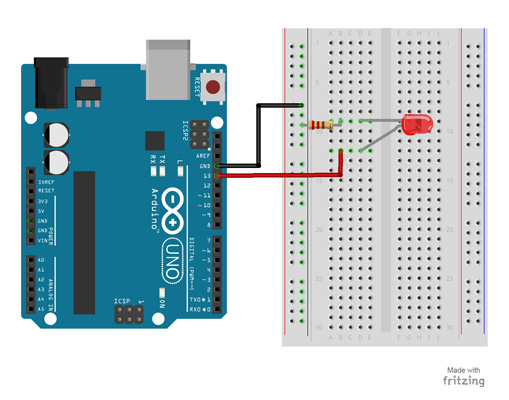

Task: Code/program an interface with the tools provided ( processing,P5JS, MitAppInventor, A frame,NodeRed) or other alternatives software that interfaces a user with an input and/or output device that you want to use.
Interpret and implement design and programming protocols to create a Graphic User Interface (GUI).
Asynchronous serial communication.
For this task, I concentrated on using P5JS as this was the interface I wanted to use for the Fab Challenge III. P5.js is a Javasript library developed by the Processing Foundation to make a web-based version of Processing.
To create a user interface and input/ output interface the P5JS serial port library communicates with a server, that gives access to a serial device connected to the computer. This is how P5 is then used as a microcontroller using asynchronous serial communication.
The idea of the task was to write a simple Arduino sketch that communicates with the P5JS serial port, controlling the brightness of an LED using a gradient from 0 to 255.

I followed the Arduino sketch that can be found here using any analogue pin: Find the links here and here
Preparing the Arduino Uno and Serial Port Connection:
Components needed:
After Preparing the Arduino sketch and circuit for an LED, I ran the P5 serial port, in the same COM as the Arduino. The P5 JS controls the brightness of the LED from a range of 0 to 255, using the cursor. The sending value is sent to the Arduino with the function serial.write. Firstly, I ran the Arduino Sketch, then saved it and closed Arduino. After that I opened the P5 serial controller, and selected the correct Port. In the P5 sketch or code, I made sure the serial port was the correct one, then I ran the code.
This was the effect: